Olives of Palestine
by
Samia A. Halaby
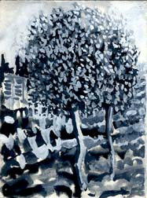
Young Olive Tree, 1996 gouache on paper 7.5 x 5.5 inches
In 1996 I wandered through the hills around Ramallah and did several little paintings. As I painted this little olive tree, it began to seem like a child. I began to pay attention to the different characters of olive trees as infants, toddlers, adolescents, powerful prime of life ones, elderly, and so on.
As I studied the texture of the foliage and of the cultured earth laden with stones below, I noticed the texture of horizontal balconies on a row of new apartment buildings across the valley. Because this is the miniscule percent of Palestine where Israelis permit us to build, our towns grow and encroach on the olives. From the other direction lurked a bigger threat. Out in the country surrounding Ramallah and all parts of the West Bank, Israelis freely confiscate our land and build their gated heavily-guarded settlements for 'Jewish occupation only.' They always select hilltops militarily overlooking Palestinian villages and town. Tragically, more land is confiscated to build special access roadways to these location. The cost in land and suffering to Palestinians is immeasurable. The painful irony is that many of these settlements remain only partially occupied.
How forlorn this infant tree and its unknown caretaker seemed -- alone in the windy mountains while the clocks of architectural warfare and economic exploitation continue to tick.
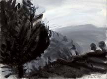
Ramallah Mountains, 1996. Gouache on paper, 5.5 x 7.5" (figmama.jpg).
This is a fig tree with two little infant olives peaking in from the right side of the frame. Olive trunks have powerful shapes which grow as they resist the wind. The two infant olive trees are already bracing themselves diagonally against the attack of the wind. That is what makes them seem as though they are peeking in at me. Oh if it were possible for olive trees to know how to brace themselves against the Israeli settlers' bulldozers.
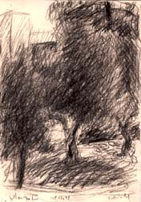
Youthful Olive, 1999. charcoal on paper, 8.25 x 5.75 inches, (youths.jpg).
I spent October, November, and December of 1999 in Palestine. Among the many projects that I undertook was a series of drawings and paintings of olive trees. Olive trees are significant in the history of Palestine because they are primary parts of its economy. As I studied them I saw great character in them. Their rugged beauty and their usefulness has affected many others and especially those peasants who tend these trees. Every day as I walked back to my home, I saw an old grandmother in village dress fussing about the olive trees of her family's garden. She belonged to the olive tree every bit as much as the olive belonged to her; and both are part of the essence of Palestine.
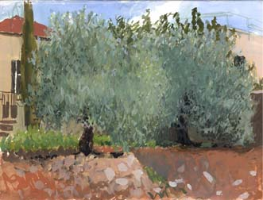
Twin Olives, 1999. Gouache on paper, 11 x 15 inches, (twins.jpg).
As I painted these two olive trees, I began to notice the subtle variation in their basic color. The foliage is a glow of Grey-green -- luminous like a cloud of finely textured light. It glistens with bits of blue sky reflected in the upper reaches; while the lower parts reflect the many colored soils of Palestine. The leaves of olive trees are small and tough, polished on top with a fuzzy, muted gray tone on their underside.
In Ramallah where these twins were painted, a certain brown-orange of the earth mingles with the olive-green of their foliage. In Sabastia, the ash gray soil mixes with the blue of the sky to create a cool, blue-green atmosphere. In Rafidia, the golden soil turns the olive green into a lighthearted green of spring. As your eye moves up to the center, and beyond, to the top of the tree; one is treated to breath taking transitions of color.
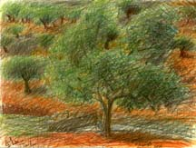
Ain Keanya, 1999. Colored pencils on paper, 9.5 x 13 inches, (EinKenya.jpg).
Once, my friend Rima took me for a ride on the roads built exclusively for Israeli settlers. These roads have caused so much loss and pain for the Palestinian peasants whose voices are seldom heard and whose love of the olive treess is rarely recorded. Up until only a few years ago, a Palestinian could have been shot to death if found on these roads. Mindful of the tragedies caused by the settler roadways, we admired the olive orchards and counted the stone buildings used for summer residences by Palestinian villagers tending their orchards. At the end we reached a spring called Ain Keanya.
Always wary of Israeli terrorism, we imbibed the precious calmness of the olive trees, some of which had a fresh white boot; the black lilies, the rare water, and the settlement of gypsies with tents and livestock. In the midst of the pastoral beauty of Palestine was imposed the brutality of an unfinished Israeli settlement on confiscated land atop one of the hills. I returned another day with my coloring pencils. I walked and walked until I found my olive tree and drew it with the terraced hillside of more trees in the background. I did not draw the sky because in the mountains of Palestine the hillside is often the backdrop of scenery.
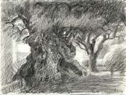
Al-Jusmaniyye (Gethsemane), 1999. Pencil on paper, 11 x 15 inches, (ancestor.jpg).
In mid November, 1999, I went to the Garden of Gethsemane to paint the olive trees there. It was a promise that I had made to myself and did not want to fail its fulfillment. The place was full of tourists and I had the insane idea to ask if I could sit in the fenced garden proper, instead of the tourist walkway surrounding it. Not only was my request met with failure but I was also informed that the doors would close in ten minutes for a two-hour lunch. I asked and they agreed to lock me in. I spent the first hour and a half deeply urgently examining the texture of one ancient trunk. I was both absorbed in the work and frightened that the time was insufficient. Now as I look at the drawing it seems a bit of a clich� because it is hard to believe that there is a tree that really looks like that. I enjoyed my concentration more than I enjoy the drawing now. It pleases me that my friend Judeh Majaj admired it as I admire him for his important work helping Palestinians who were maimed by Israelis during the Intifadah. This drawing is for him.
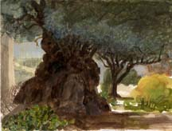
The Great Great Grandmother, 1999. Gouache on paper, 11 x 15 inches, (Gethsemane.jpg).
This is the second work that I did in my two hours at Gethsemany. After spending the first hour and a half concentrating and studying the tree, I pulled out my colors and worked fiendishly fast. But before I started two priests wanted to know if I was related to Sophia Halaby. Yes! They continued by telling me that they had a painting by her and asked if I would like to see it. Sophia had chosen the same view as I had. The difference was that she had made the view of Jerusalem more important while I paid more attention to one ancient tree. I suddenly felt a rush of confidence. I was born here in Jerusalem. I am as solidly rooted here as are these trees and, in spite of the international religious bureaucracy which so readily betrays us and the horrors of the Israelis who have stolen our homes and our city, Jerusalem is mine. This little painting is for my sister, Nahida, who shares with me much of the pain and pleasure of returning to Palestine.
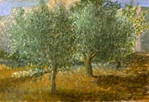
Liana's Olives, 1999. G\gouache on paper, 22 x 15 inches. (liana.jpg).
"Liana's Olives" is a gouache which I painted in the garden of a house in Ramallah. My friend, Liana Badr was making a film about the relationship of olive trees to Palestinian women. When she heard of my work she decided to include me. We arranged for her to arrive with the film crew while I was painting. I had chosen a pair of olive trees which looked like youthful twins. The earth was of the brightest orange-brown under the plenteous sunshine. It was fascinating to watch the film crew. Myself, the olive trees, the painting, and the palette were all photographed in many different forms and angles. Later, I completed the work when I was alone and free to concentrate. In the same way, Liana will sit alone and edit her film. I presented the painting to Liana as a memento of a wonderfully shared experience in the art of Palestine.
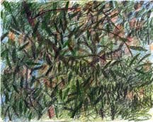
Abstraction at Rafidia, 1999. Colored pencils on paper, 9.75 x 12.75 inches, (rafidia.jpg).
I was lucky enough to sit and paint at a huge olive orchard in Rafidia till after sunset. It was an experience of expansive comfort. I sat on the golden earth under the olive trees feeling as though I was embracing a huge warm freshly baked loaf of bread. My friend Liana Badr and her film crew worked in the distance up and down the hills and terraces. Occasionally they would aim their cameras at me. To mitigate my disappointment at not finding an uprooted olive tree, Liana suggested that I do an abstract drawing of the trees. What an idea! Of course, why not? Have I not always considered that abstraction is based on nature? Why not do one directly from material immediately surrounding me rather than from memory. This idea developed into a work called Rafidia which I executed with colored pencils. I later expanded on the olive orchards of Rafidia and what emerged was an abstract mural-sized drawing titled, Olive Orchard in My Studio, which was created in my studio in New York.
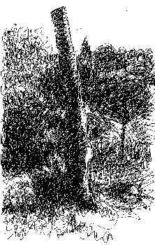 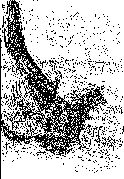
left: First Stolen Olive Tree, 1999. Ink on paper, 5.75 x 9.25 inches, (stolen1.jpg).
right: Second Stolen Olive Tree, 1999. Ink on paper, 5.75 x 8.25 inches, (stolen2.jpg).
In doing my series of Olive Trees, it was important to include these trees which share our Nakbe - our tragedy. They are the uprooted, beheaded, or stolen olive trees which show how the Israelis are stealing our land and our culture. For me these fallen trees evoke the nobility of fallen freedom fighters - freedom fighters from nearly every family of Palestine who are not forgotten.
Here is the story of how I discovered some stolen olive trees and how I drew them. One day, I accompanied Liana and a Swiss television crew as they interviewed her. The last spot we visited was on the hillside in the gardens of the Hebrew University in Jerusalem where her grandparents' home once stood. They are Kamal Abdel Raheem Badr and his wife Zleekha Shahaby. Even though the land and old stone home were confiscated by the Israelis, Liana had often come to look at the house and remember her grandparents just as I do. Their house was recently torn down to make room for a garden that was being built by the Israelis. A large gash like a bleeding wound is now on the spot where the house once stood. An old fig tree, buried to its middle in rubble, is still standing at the garden gate. Magnificent hand-cut Jerusalem stones from the house, the product of Palestinian labor, were carefully piled for reuse by Israelis. Just below the house on the hillside are what remains of her grandparents' olive orchard. Liana's pain was obvious as she stood facing the camera with the remains of the house, its garden, and the distant olive orchard visible behind her.
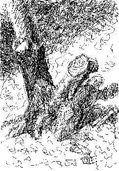 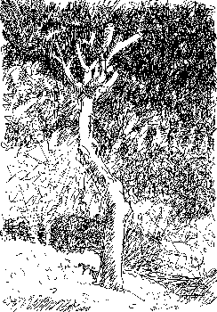
Third Stolen Olive Tree, 1999. Pen on paper, 5.75 x 8.25 inches, (stolen3.jpg).
Fourth Stolen Olive Tree, 1999. Pen on paper, 5.75 x 8.25 inches, (stolen4.jpg).
The following week, Liana and I returned with her film crew. We placed ourselves in the formal garden park of the Hebrew University in order to get a good view of the house - the same spot used by the Swiss television crew. As they photographed, I saw a tree stump which I wanted to sketch. One member of the crew asked me why I chose to draw them. Another one, an offspring of peasants now living in Ghazze, immediately noticed us. As he approached he lovingly caressed the stump like an injured old friend and described with precise detail how he knew that this was a freshly uprooted and heavily pruned olive tree. He pointed out the freshly turned earth around it.
I had intuitively found and begun to draw the olive trees which I had so long sought. The intersection of the film crew made my intuitions conscious. Thus I worked more urgently and make four drawings in black ink. They are the stolen trees from Liana's grandparents' olive orchard, cut and pruned and replanted in the formal European-style garden of the Hebrew University. I had bitter thoughts of how, in a couple of years, this ancient Palestinian olive tree will have produced its new foliage and will look as though it had been planted by Israelis here in their garden since long ago. Israelis yearn for roots here in our land but they continue to live with stolen ones.
This hillside of the Hebrew University is an image of Israel devouring Palestine more eloquent than words. Below the remains of the old house, the remaining olive trees are still plentiful in the semi arid landscape with the terraced arrangements typical of Palestine. Above, near the top of the hill and just below the University's buildings, is the irrigated formal garden with newly-built walkways. With their heavy dose of US dollars and weaponry they uproot our trees and our homes to build their own. And while Palestinians go thirsty they water their gardens sumptuously.
The Garden is called the Tabachnick National and University Park. On a large polished stone is written that the park is established by Morris and Freda Tabachnick of Windsor, Canada. No! This is the land and home of Kamal Abdel Raheem Badr and his wife Zleekha Shahaby. Propaganda does not change facts, it only veils them temporarily.
Even while this hill is the visual metaphor of what Israel is doing to Palestine, it still contains a promise. The well watered hot-house flower will eventually wilt in our arid climate especially when the gardener runs out of thirst quenching dollars.
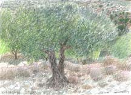
Last Day of 1999 Olive, 1999. Colored pencils on paper, 11.5 x 16.5 inches, (millennium.jpg).
On the last day of the century, on the eve of the third millennium, I sat on the rim of a valley in al-Tire, the windy spot, and there drew with colored pencils a staunch tall olive tree with the far valley below. In the distance are rows of rocks and more olive trees scoring the background with their horizontally meandering motion - so incredibly beautiful. With that drawing I celebrated the eve of the new millennium as I celebrate the beauty of Palestine and my optimism that it will be free again.
My Grandmother... The Town of Beisan... The Arab City of Jerusalem... Sabah Told Me... My Home in Yafa... Khader Told Me... Our Students... A Taxi Ride in Bethlehem... Written by Doctor Fathihe Saudi... Hasan Told Me... A Visit to Kafr Qasem... The Artist of Kafr Qasem... The Massacre at Kafr Qasem (not yet ready)
Tayseer Barakat, painter... Rana Bishara, painter and installation artist... Sari Khouri, painter... Abdel Tamam, painter... Vera Tamari, ceramist and painter... Adnan Yahya, painter and graphic artists...